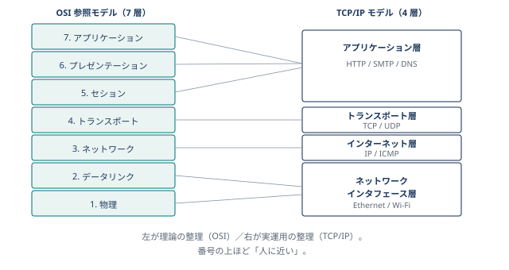

:::chapter-opener
:::chapter-lead
「何でできているか」を見る分野。
階層構造でとらえると、用語の山が一気に整理されます。
:::
:::
:::onepage-map

:::section-intro テクノロジ系は出題数がもっとも多く、合否を分ける主戦場です。 範囲は広いものの、階層でとらえると怖くありません。 本章では、下から上へ階段を上がるように説明します。 :::
:::misconceptions
:::compare-table | 名前 | 役割 | 住所のたとえ | | :-- | :-- | :-- | | MAC アドレス | 機器に焼き付いた固有番号 | 身分証番号 | | IP アドレス | ネットワーク上の現在の居場所 | 住民票の住所 | | URL | 人が読むための看板 | 「新宿のラーメン屋」 | :::
:::point-box
:::compare-table | 観点 | TCP | UDP | | :-- | :-- | :-- | | 信頼性 | 高い（再送・順序制御） | 低い（届かないことがある） | | 速さ | やや遅い | 速い | | 使いどころ | Web・メール・ファイル転送 | 音声通話・映像配信・DNS | :::
:::point-box
:::exam-trap-box ### 「完全性が損なわれた例」を見抜く
:::mini-quiz Q. 通信プロトコルのうち、再送制御によって信頼性の高い通信を実現するものはどれか。
::::answer 正解 : 2 UDP は速さ重視、ICMP は到達確認、ARP は IP → MAC 変換。 再送・順序制御を持つのは TCP のみです。 :::: :::
:::summary-card chapter ### この章のまとめ